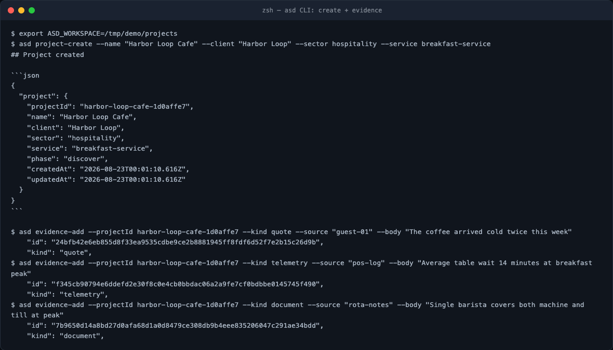
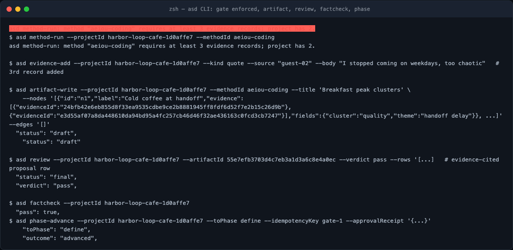

A first engagement on the CLI
The CLI pack (asd) is the fastest way to learn the engine because every
tool call is visible. This module runs one complete Discover loop on a small
fictional engagement — Harbor Loop Cafe, breakfast service — including
two failures you will hit in real life.

Create and capture
export ASD_WORKSPACE=/tmp/demo/projects # projects default to ~/.asd/projects
asd project-create --name "Harbor Loop Cafe" --client "Harbor Loop" \
--sector hospitality --service breakfast-service
The project lands as harbor-loop-cafe-1d0affe7/ with project.json,
artifacts/, evidence/, renders/, sops/. Then capture evidence — every
record is content-addressed:
asd evidence-add --projectId harbor-loop-cafe-1d0affe7 --kind quote \
--source guest-01 --body "The coffee arrived cold twice this week"
# "id": "24bfb42e6eb855d8f33ea9535cdbe9ce2b8881945ff8fdf6d52f7e2b15c26d9b",
Three records: two guest quotes, one POS telemetry line, one rota note.
Failure 1 — methods enforce their own preconditions
$ asd method-run --projectId harbor-loop-cafe-1d0affe7 --methodId aeiou-coding
asd method-run: method "aeiou-coding" requires at least 3 evidence records; project has 2.
With only two records captured, the SOP refuses to run. Add the third record and it passes. Nothing was half-written; there is nothing to clean up.
Write the typed artifact
asd artifact-write --projectId … --methodId aeiou-coding --title 'Breakfast peak clusters' \
--nodes '[{"id":"n1","label":"Cold coffee at handoff",
"evidence":[{"evidenceId":"24bfb42e…"},{"evidenceId":"e3d55af0…"}],
"fields":{"cluster":"quality","theme":"handoff delay"}},
…]' --edges '[]'
# "status": "draft"
Closed schema: unknown fields rejected, cited ids must resolve, acceptance minimums enforced (three nodes × two evidence refs here). The artifact lands as a draft — finality belongs to the Critic.
Failure 2 — review rows are contracts too
A pass verdict requires at least one evidence-cited row and cannot carry
defects; a veto requires defect rows each naming a fix. Omit the citation and
the gate answers: pass verdict requires at least one evidence-cited review row.

Review → factcheck → the human gate
$ asd review --projectId … --artifactId 55e7efb3703d4c7e… --verdict pass --rows '[…]'
"status": "final"
"verdict": "pass"
$ asd factcheck --projectId …
"pass": true
$ asd phase-advance --projectId … --toPhase define --idempotencyKey gate-1 \
--approvalReceipt '{"receiptId":"hl-gate-discover-1","decision":"approve",…}'
"toPhase": "define"
"outcome": "advanced"
factcheck exits nonzero while anything is draft or failing integrity — that
is what makes it usable as a CI step. The phase gate demands a full approval
receipt (receiptId, decision:"approve", rationale, approvedBy,
approvedAt) and re-checks that every design artifact is final before it
moves discover → define.
Hands-on lab
Reproduce this loop end-to-end, but deliberately: omit --client at create,
run aeiou-coding with two records, submit a pass row without an evidence id.
Keep all three failure messages in your notes — recognizing them fast is the
skill.